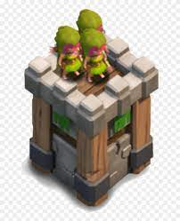

In Clash of Clans, having a strong defense is as important as having a capable offense; without a competent defense, one's village can be easily destroyed and their resources will be easily looted.
Defenses safeguard Trophies and protect Resources from your enemy. Each defense has its own strengths and weaknesses, and its location in your village should reflect on that.
Cannon
Cannons are one of the defensive buildings that cannot attack air units. This makes them easy pickings for Balloons, Dragons, or Minions if they are not within the range of Air Defenses, Archer Towers, X-Bows (on ground and air mode), Hidden Teslas, or Wizard Towers. Cannons are only able to damage one unit at a time.
archer tower

Archer Towers are a single-target defense in the Home Village. They are the second defense available to players and the first defense to attack aerial troops, unlocked at Town Hall 2. Archer Towers are extremely versatile structures. They are able to target both ground and air units, and they have excellent range.Build walls effectively. The first aspect to a great defense base in Clash of Clans using all of your walls, and using the walls effectively. At lower levels, you won’t have a lot of wall to build so you want to put your most valuable resources inside your walls.
At the beginning of your village your three biggest resources are your elixir and gold storages, and your Town Hall.
For defense-minded players, the Town Hall is your most valued asset. If your attacker cannot destroy your town hall, the most the attacker can get is one star. Town Halls also have the highest hit points of any building, except walls.
Focus on building walls around your Town Hall and other defense weapons to protect it.
If you leave any gaps in your walls, enemy troops will walk through the broken area.Defending at Lower Levels
Download Article
Image titled Protect Your Village in Clash of Clans Step 1
1
Build walls effectively. The first aspect to a great defense base in Clash of Clans using all of your walls, and using the walls effectively. At lower levels, you wont have a lot of wall to build so you want to put your most valuable resources inside your walls.
At the beginning of your village your three biggest resources are your elixir and gold storages, and your Town Hall.
For defense-minded players, the Town Hall is your most valued asset. If your attacker cannot destroy your town hall, the most the attacker can get is one star. Town Halls also have the highest hit points of any building, except walls.
Focus on building walls around your Town Hall and other defense weapons to protect it.
If you leave any gaps in your walls, enemy troops will walk through the broken area.
Dont place all of your defenses and resources inside your walls. Aim to eventually build several layers of walls around your most important buildings and resources.
2
Use other structures as a defense. Archers, Wizards, Hog Riders, and flying creatures are capable of shooting or flying over walls. Use less important buildings to create a buffer for these attacks, delaying your enemies’ progress.
Use your cannons, Archer towers, and mortars as a buffer. Place these units inside your walls if you can. If you don’t have enough walls, use these defense buildings to complete your outer defense.
Your Archers and cannons should be on the front lines of your defenses. These units are capable of firing quickly and will draw attackers in.
Keep your mortars and Air Defense units in the center of your base. These units deal splash damage, meaning the attack targets an area of troops, not individual units.
here is some demo of coc
.jpeg)